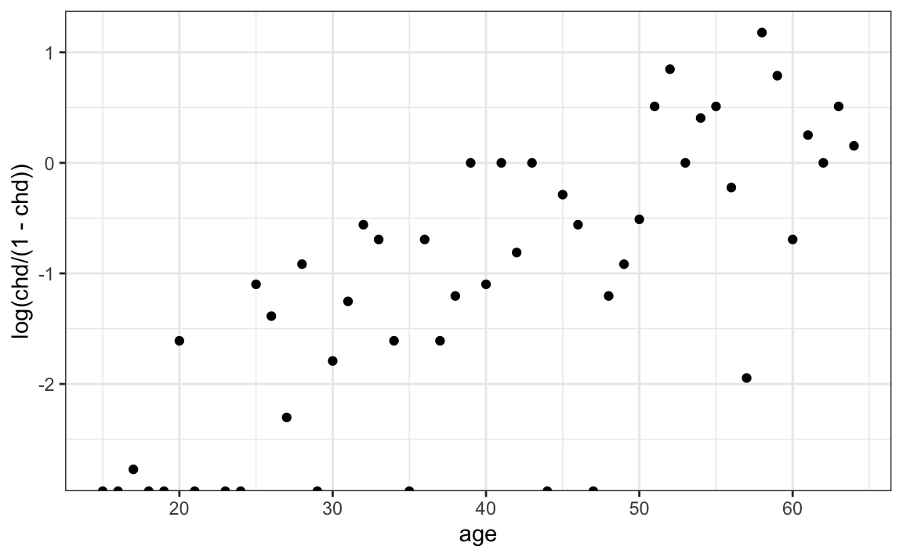
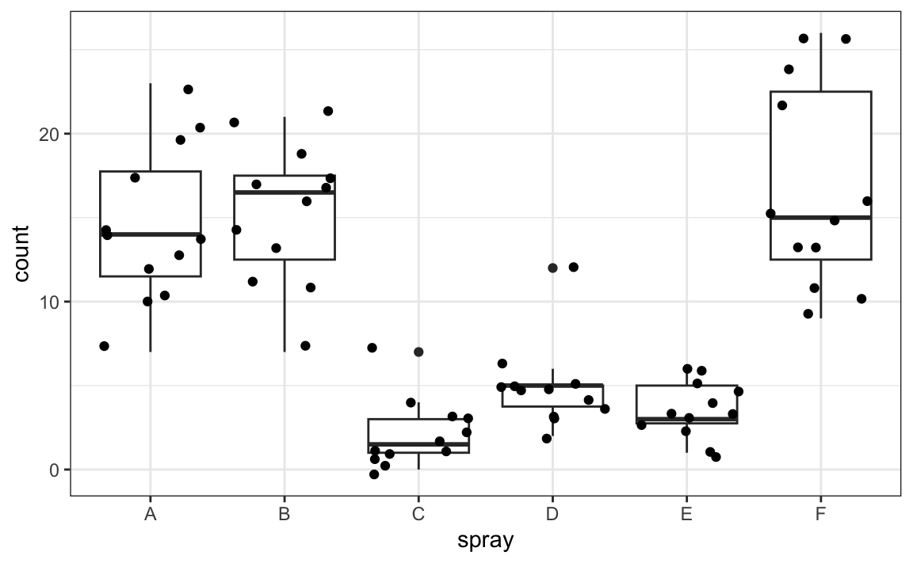

library(tidyverse)
library(dslabs)
totals <- research_funding_rates |> select(-discipline) |>
summarize_all(sum) |>
summarize(yes_men = awards_men,
no_men = applications_men - awards_men,
yes_women = awards_women,
no_women = applications_women - awards_women)
totals |> summarize(percent_men = yes_men/(yes_men + no_men),
percent_women = yes_women/(yes_women + no_women))
#> percent_men percent_women
#> 1 0.177 0.14918 Generalized Linear Models
The statistical models we have used so far assume that the outcome of interest is continuous. However, in many real applications the outcomes are binary, categorical, or counts. In these settings, we are often interested in how the outcome changes with one or more explanatory variables.
For example, we may want to study how the probability of developing coronary heart disease varies with age, systolic blood pressure, or other clinical measurements; how the chance of surviving the sinking of the Titanic depends on passenger characteristics; or how different insecticides influence the number of insects observed in agricultural field plots.
Although these outcomes are no longer continuous, many of the ideas introduced in the linear model framework continue to apply. With a small adaptation, we can extend the mathematical approach used for linear models so that it can be applied in all of these situations, while also continuing to use the same modeling tools in R.
These extended models are known as generalized linear models. To motivate them, we begin this chapter with association tests for two categorical variables. We then show how these tests arise naturally from logistic regression, our first example of a generalized linear model for binary outcomes. We conclude with examples that illustrate how the same framework can be applied across a range of contexts, including outcomes that are binary, or counts.
18.1 Association Tests
We start with the simplest case: assessing whether two categorical variables are associated. These methods were developed before GLMs, but they can be understood as special cases of logistic regression. Once we establish this connection, the general GLM framework will follow naturally.
Case study: Funding success rates
A 2014 PNAS paper1 analyzed success rates from funding agencies in the Netherlands and concluded that their
results reveal gender bias favoring male applicants over female applicants in the prioritization of their “quality of researcher” (but not “quality of proposal”) evaluations and success rates, as well as in the language use in instructional and evaluation materials.
The main evidence supporting this conclusion is based on a comparison of the percentages which we can compute using the data presented in the paper:
But could this be due just to random variability? Here we learn how to perform inference for this type of data.
In Section 18.1.3, we introduce association tests that permit us to answer this question. Before doing so, we present a historically important example that illustrates the need for such methods.
The Lady Tasting Tea
The classic motivating example for association tests is the Lady Tasting Tea experiment designed by R. A. Fisher. A colleague at the Rothamsted Experimental Station claimed she could tell whether milk was poured into a cup before or after the tea. Fisher proposed a randomized test and derived the probability of each possible result under the assumption that she was simply guessing. This led to what is now known as Fisher’s exact test, based on the hypergeometric distribution.
As an example, suppose she correctly identified 3 out of 4 cups:
To evaluate whether this provides evidence of real ability, we consider the null hypothesis that she is guessing. Because she knows there are four of each type, guessing corresponds to randomly drawing 4 cups from an urn containing 4 milk-first and 4 tea-first cups.
The probability of correctly guessing \(k\) cups is given by the hypergeometric formula:
\[ \frac{\binom{4}{k}\binom{4}{4-k}}{\binom{8}{4}}. \]
The probability of getting 3 or more correct by chance is therefore : \[ \frac{\binom{4}{3}\binom{4}{1}}{\binom{8}{4}} + \frac{\binom{4}{4}\binom{4}{0}}{\binom{8}{4}} = \frac{16}{70} \approx 0.24. \] So correctly identifying 3 cups could easily occur by chance and is not compelling evidence of the claimed ability.
This calculation is what Fisher’s exact test performs. In R we can type:
fisher.test(tab, alternative = "greater")$p.value
#> [1] 0.243Historical accounts suggest that the lady did perform well in the original demonstration. Fisher’s goal was not to confirm or refute her ability, but to illustrate how to design a fair experiment and evaluate evidence with probability.
Two-by-two tables and the Chi-square test
Notice that our funding example is analogous to the Lady Tasting Tea: under the null hypothesis, funding is assigned at random regardless of gender, just as in Fisher’s example cups are guessed at random regardless of when the milk was poured.
However, in the Lady Tasting Tea example, we were able to use the hypergeometric distribution because the design fixed both the number of cups of each type and the number of selections for each category. In other words, the row totals and the column totals of tab were predetermined by the experiment.
In the funding example, and in most real-world data, this is not the case. Neither the number of funded applications nor the number of male and female applicants is fixed in advance; these totals arise from the data we observe. Because the row and column totals are not fixed, the hypergeometric model is no longer appropriate and rarely used in practice.
In such settings, we instead use the Chi-squared test, which provides a way to test for association between two categorical variables without requiring fixed margins. Let’s apply it to the funding rates example.
The first step in a Chi-squared test is to create the observed two-by-two table:
o <- with(totals, data.frame(men = c(no_men, yes_men),
women = c(no_women, yes_women),
row.names = c("no", "yes")))We then estimate the overall funding rate which we will use to determine what we expect to see if successful funding was assigned independent of gender:
We use this to compute what we expect to see by chance:
e <- with(totals, data.frame(men = (no_men + yes_men)*c(1 - rate, rate),
women = (no_women + yes_women)*c(1 - rate, rate),
row.names = c("no", "yes")))We can see that more men than expected and fewer women than expected received funding:
cbind(o, e)
#> men women men women
#> no 1345 1011 1365 991
#> yes 290 177 270 197However, under the null hypothesis these observations are random variables. The Chi-square statistic quantifies how much the observed tables deviates from the expected by:
- Taking the difference between each observed and expected cell value.
- Squaring this difference.
- Dividing each squared difference by the expected value.
- Summing all these values together to get the final statistic.
sum((o - e)^2/e)
#> [1] 4.01We use this summary statistic because its sampling distribution can be approximated by a known parametric distribution: the Chi-square distribution.
The R function chisq.test takes a two-by-two table and returns the results from the test:
chisq_test <- chisq.test(o, correct = FALSE)We see that the p-value is 0.045:
chisq_test$p.value
#> [1] 0.0451By default, the chisq.test function applies a continuity correction. This correction subtracts 0.5 from the absolute deviation between observed and expected counts:
and this matches the default behavior of:
chisq.test(o)$statistic
#> X-squared
#> 3.81The reason for this adjustment is that the chi-square test is based on a continuous probability distribution, while the two-by-two table counts are discrete. When sample sizes are small, the difference between a continuous approximation and the discrete distribution can be noticeable. The continuity correction slightly reduces the test statistic to account for this mismatch, making the approximation more conservative (that is, less likely to produce small p-values by chance).
We previously used the argument correct = FALSE to avoid this adjustment because, in moderate-to-large samples, the correction is not needed and can slightly reduce the test’s power.
Odds ratios
The Chi-square test provides a p-value but it does not quantify the size of the effect. As discussed in Chapter 13, we generally prefer confidence intervals over p-values because they communicate effect size and uncertainty. So how do we quantify the effect here?
For two categorical groups, our data can be summarized in a two-by-two table:
| Women | Men | |
|---|---|---|
| Awarded | a | b |
| Not Awarded | c | d |
One option is to compare the difference in proportions:
\[ \frac{a}{a+c} - \frac{b}{b+d}. \]
However, differences in proportions are not directly comparable across baseline levels. For example, a change from 1% to 2% is just as large on the probability scale as a change from 49% to 50%, yet the practical interpretation is very different.
For this reason, a more common way to quantify association in our context is the odds ratio:
\[ \text{odds ratio} = \frac{a/c}{b/d} = \frac{ad}{bc} \] This quantity compares the odds of being funded for women to the odds of being funded for men.
The log odds ratio is often used because it is symmetric around 0:
\[ \log\left(\frac{ad}{bc}\right) = 0 \quad \text{when there is no difference between groups.} \]
Moreover, the log odds ratio has a convenient approximate standard error:
\[ \mathrm{SE}\left[\log\left(\frac{ad}{bc}\right)\right] \approx\sqrt{\frac{1}{a} + \frac{1}{b} + \frac{1}{c} + \frac{1}{d}}. \]
and can be shown to be asymptotically normal. This allows us to construct confidence intervals. A 95% confidence interval would be:
\[ \log\left(\frac{ad}{bc}\right) \pm 1.96 \sqrt{\frac{1}{a} + \frac{1}{b} + \frac{1}{c} + \frac{1}{d}} \] Once we construct a confidence interval for the log odds ratio, we can obtain a confidence interval for the odds ratio by exponentiating the two endpoints.
Her we compute the odds ratio for our funding data and construct a 95% confidence interval:
This allows us to assess both the magnitude of the association and the uncertainty around it. The estimated odds ratio is less than 1, indicating that women have lower odds of being funded than men in this dataset. The 95% confidence interval does not include 1, which implies the p-value is less than 0.05.
The log odds ratio is not defined if any of the cells of the two-by-two table is 0. This is because if \(a\), \(b\), \(c\), or \(d\) are 0, the \(\log(\frac{ad}{bc})\) is either the log of 0 or has a 0 in the denominator. For this situation, it is common practice to avoid 0s by adding 0.5 to each cell. This is referred to as the Haldane-Anscombe correction and has been shown, both in practice and theory, to work well.
18.2 Logistic regression
We now connect the association tests described above to the linear model framework introduced in Chapter 17. Once we make this connection, the same ideas extend naturally to more complex settings, including models with continuous predictors and multiple explanatory variables.
If we define \(Y_i\) to be 1 if applicant \(i\) was funded and 0 otherwise, and set \(x_i = 1\) for women and \(x_i = 0\) for men, we might be tempted to write a linear model:
\[ Y_i = \beta_0 + \beta_1 x_i + \varepsilon_i. \]
However, this model is not appropriate because the left-hand side only takes values 0 or 1, while the right-hand side can take any real value. In particular, the implied expected value
\[ \mathrm{E}[Y_i] = \Pr(Y_1=1) = \beta_0 + \beta_1 x_i \]
could be less than 0 or greater than 1, which is not possible for a probability.
If we instead model the log odds as a linear function of \(x_i\)
\[ \log\left\{\frac{\Pr(Y_i=1)}{1 - \Pr(Y_i=1)}\right\}= \beta_0 + \beta_1 x_i. \]
we get the following useful interpretation of the parameters:
- \(e^{\beta_0}\) is the odds of funding for men,
- \(e^{\beta_0} e^{\beta_1}\) is the odds of funding for women.
- \(e^{\beta_1}\) is the odds ratio comparing women to men.
The parameter \(\beta_1\) is thus the log odds ratio.
The name logistic regression comes from the fact that
\[ g(p) = \log\frac{p}{1-p} \] is called the logistic function or logit transformation.
Note that we can write the probability \(p_i = Pr(Y_i = 1)\) as a function of the paremeters \(\beta_0+\beta_1x_i\) for any \(x_i\) by using the inverse of the logit transformation:
\[ \Pr(Y_i=1) = g^{-1}(g(p_i)) = g^{-1}\left(\beta_0+\beta_1x_i\right) = \frac{e^{\beta_0+\beta_1x_i}}{1 + e^{\beta_0+\beta_1x_i}} = \frac{1}{1 + e^{-\beta_0-\beta_1x_i}} \]
Estimation
Unlike linear regression, least squares is not optimal here because the variance of the outcome depends on its mean and the model for the expected value is nonlinear. Instead, the parameters are estimated using maximum likelihood estimation (MLE). The basic idea of MLE is to choose the parameter values that make the observed data most probable according to the assumed statistical model. For logistic regression, this means finding the values of \(\beta_0\) and \(\beta_1\) that maximize the probability of observing the particular pattern of zeros and ones in the data.
Our example analyzing a two-by-two table is a special case in which the estimates can be written directly as functions of the observed proportions. But in general, for logistic regression models, the estimates cannot be written in a simple closed-form expression. Instead, numerical optimization algorithms are used to find the values that maximize the likelihood. Under standard conditions, a version of the central limit theorem applies to these estimates. This implies that for large sample sizes the estimates are approximately normally distributed and that their standard errors can be computed from the curvature of the likelihood function near the maximum. This, in turn, permits the construction of confidence intervals and hypothesis tests.
Readers interested in a deeper and more general treatment of MLE and logistic regression can consult the Recommended Reading section, where we point to textbooks that develop the likelihood framework, the asymptotic results, and the numerical algorithms in more detail.
Fitting the model in R
We can fit the logistic regression model in R using the glm function with family = binomial.
Although we do not have individual-level records, we do have totals for each group. This is sufficient because the sum of the outcomes for men is a binomial random variable with \(N_0\) trials (the number of male applicants) and success probability \(p_0\), which satisfies
\[ \log\left(\frac{p_0}{1-p_0}\right) = \beta_0. \]
Similarly, the sum of outcomes for women is binomial with \(N_1\) trials and success probability \(p_1\), where
\[ \log\left(\frac{p_1}{1-p_1}\right) = \beta_0 + \beta_1. \]
The glm function can work directly with grouped counts by using a two-column matrix of successes and failures:
and encoding the group indicator:
We then fit the model with glm:
fit <- glm(y ~ x, family = binomial)
coefficients(summary(fit))
#> Estimate Std. Error z value Pr(>|z|)
#> (Intercept) -1.534 0.0647 -23.7 3.83e-124
#> xwomen -0.208 0.1041 -2.0 4.54e-02To obtain the estimated odds ratio, we exponentiate the coefficient:
exp(fit$coef[2])
#> xwomen
#> 0.812This value represents the multiplicative change in the odds of being funded for women compared to men.
A 95% confidence interval for this odds ratio is obtained by exponentiating the corresponding confidence interval for \(\beta_1\):
This interval provides both an effect size and a measure of uncertainty.
Relation to earlier methods
We can confirm that logistic regression yields the same odds ratio estimate as the simple two-by-two table (saved in o) calculation: and saved in or and se:
The p-values obtained from chisq.test and from logistic regression
chisq.test(o, correct = FALSE)$p.value
#> [1] 0.0451
tidy(fit)$p.value[2]
#> [1] 0.0454differ slightly because they are based on different approximations.
18.3 Generalizing the model
At first glance, logistic regression may seem like an unnecessarily complicated way to obtain the same results we derived using the odds ratio and the standard error approximation. So why introduce this more general framework?
The key advantage becomes clear when the explanatory variables are not just two categories. For example, returning to the question of coronary heart disease, age is a continuous variable. There is no simple way to form a two-by-two table for every possible age value. Similarly, if we wish to adjust for several explanatory variables simultaneously (as we did in Chapter 17), we need a model-based approach rather than a table-based one.
The general strategy is to assumes \(Y_i\) follow a known distribution, such as binomial or exponential, and model a transformation of the expected value of the outcome using a linear combination of predictors:
\[ g\left(\mathrm{E}[Y_i]\right) = \beta_0 + \sum_{j=1}^J \beta_j x_{ij} \]
Here \(x_{ij}\) is the value of the \(j\)-th explanatory variable for individual \(i\), and \(g(\cdot)\) is called the link function. For binary outcomes we used the logistic function because it maps probabilities (which must lie between 0 and 1) to all real numbers. For count data, which we often model with a Poisson distribution, the expected value \(\mathrm{E}[Y_i]\) can exceed 1, so the logit link is not suitable. Instead, the log link is typically used: \(g(\lambda) = \log(\lambda)\). This link maps positive values (such as rates) to the real line and provides an interpretable multiplicative form: if \(\exp(\beta_1)= 1.10\), then a one-unit increase in \(x_{i1}\) corresponds to a 10% increase in the rate.
This framework is known as a generalized linear model (GLM). Logistic regression is one special case; Poisson regression is another.
Logistic regression example: Coronary heart disease
The SAheart dataset contains observations from a retrospective sample of adult males in a high-risk region of South Africa:
data("SAheart", package = "bestglm")If we compute the proportion of individuals with heart disease at each age and examine the log-odds, the relationship appears approximately linear:
SAheart |>
group_by(age) |>
summarize(chd = mean(chd)) |>
ggplot(aes(age, log(chd/(1 - chd)))) +
geom_point()
This suggests the logistic regression model:
\[ \log\left\{\frac{\Pr(Y_i=1)}{1 - \Pr(Y_i=1)}\right\} = \beta_0 + \beta_1 x_i \] with \(Y_i\) an indicator of coronary heart disease and \(x_i\) representing the age of individual \(i\). The estimate for \(\beta_1\) converts into an odds ratio. The quantity \(\exp(\beta_1)\) represents the multiplicative increase in the odds of heart disease for each one-year increase in age.
Fitting can fit the model using:
fit <- glm(chd ~ age, family = binomial, data = SAheart)
tidy(fit)[2,]
#> # A tibble: 1 × 5
#> term estimate std.error statistic p.value
#> <chr> <dbl> <dbl> <dbl> <dbl>
#> 1 age 0.0641 0.00853 7.51 5.76e-14We can then use GLM theory to construct a 95% confidence interval for the odds ratio:
We can also use the fitted model to compute predicted probabilities for specific ages:
predict(fit, data.frame(age = seq(20, 80, 10)), type = "response")
#> 1 2 3 4 5 6 7
#> 0.0963 0.1682 0.2774 0.4216 0.5805 0.7243 0.8330When type = respsone the predict function uses the inverse logistic transformation to convert \(\hat{\beta}_0 + \hat{\beta}_1 x_i\) to estimated probabilities.
Note that the SAheart dataset includes several additional explanatory variables that could plausibly relate to heart disease risk, such as tobacco use, cholesterol level, and family history. With the glm function, we can include these predictors in the model simply by adding them to the right-hand side of the formula. However, we must be cautious when interpreting the resulting coefficients. A logistic regression model will always return parameter estimates, p-values, and confidence intervals, but these numbers are only meaningful if the model is a reasonable approximation to the data-generating mechanism. In many biomedical settings, there is no underlying physiological theory guaranteeing that the relationship between predictors and the log-odds of disease is linear. Therefore, model assumptions should be examined critically. This includes exploratory data analysis, consideration of possible confounding variables, and assessment of model fit through diagnostic tools, rather than accepting the fitted model at face value.
Poisson regression example: Effectiveness of insect sprays
The InsectSpraysdataset records the number of insects found in agricultural field units after treatment with different sprays:
InsectSprays |> ggplot(aes(spray, count)) + geom_boxplot() + geom_jitter()
Spray C appears most effective. We could compare mean insect counts across sprays:
But how do we assess uncertainty? Can we construct confidence inteverals? Note that counts are small (often under 10), and the sample size per group is only 12, so normal approximations may be unreliable.
A Poisson regression provides an alternative. First we choose C as the reference group and then we fit the model:
InsectSprays$spray <- relevel(InsectSprays$spray, ref = "C")
fit <- glm(count ~ spray, family = poisson, data = InsectSprays)
tidy(fit, conf.int = TRUE)
#> # A tibble: 6 × 7
#> term estimate std.error statistic p.value conf.low conf.high
#> <chr> <dbl> <dbl> <dbl> <dbl> <dbl> <dbl>
#> 1 (Intercept) 0.734 0.200 3.67 2.43e- 4 0.315 1.10
#> 2 sprayA 1.94 0.214 9.07 1.18e-19 1.54 2.38
#> 3 sprayB 2.00 0.213 9.36 7.65e-21 1.60 2.44
#> 4 sprayD 0.859 0.239 3.60 3.20e- 4 0.404 1.34
#> 5 sprayE 0.519 0.253 2.05 4.00e- 2 0.0315 1.03
#> # ℹ 1 more rowHere the parameters measure the log of the multiplicative change in the expected count relative to Spray C. If a spray has the same effectiveness as Spray C, its corresponding parameter estimate would be 0. The estimated coefficients and their confidence intervals indicate that several sprays differ substantially from Spray C, and these differences are too large to be explained by Poisson sampling variability alone. In other words, Spray C’s superior performance is unlikely to be due to chance.
The inference relies on asymptotic approximations similar to the CLT but often performs better than applying the CLT directly to means when counts are small.
In this example, a simple comparison of group means would have also worked. The advantage of Poisson regression becomes more evident when the explanatory variable is continuous, e.g., modeling counts as a function of exposure time or concentration levels, where group-by-group averaging is not practical.
Beyond logistic and Poisson regression
Logistic and Poisson regression are the two most widely used GLMs because binary and count outcomes are common in scientific applications. However, the GLM framework is more general:
- Negative binomial regression handles count data for which the variability is larger than what is predicted by the Poisson model.
- Gamma regression is useful for positive continuous outcomes such as reaction times or insurance claim sizes.
- Quasi-likelihood GLMs allow modeling of mean–variance relationships without fully specifying a distribution.
In practice, GLMs require careful model checking. Diagnostic plots and residual analysis are especially important here because, unlike ordinary least squares, we are explicitly assuming a particular outcome distribution.
To go further, consult the recommended readings listed at the end of the chapter. They cover link functions, likelihood theory, diagnostics, and extensions in much greater detail.
18.4 Large samples, small p-values
As mentioned earlier, reporting only p-values is not always a useful way to report the results of data analysis. In scientific journals, some studies seem to overemphasize p-values. Some of these studies have large sample sizes and report impressively small p-values. Yet by looking closely at the results, we realize that the odds ratios are quite modest: barely bigger than 1. In this case, the difference may not be practically significant or scientifically significant.
Note that the relationship between odds ratio and p-value is not one-to-one; it depends on the sample size. Therefore, a very small p-value does not necessarily mean a very large odds ratio. Observe what happens to the p-value if we multiply our two-by-two table by 10, which does not change the odds ratio:
ox10 <- o |> mutate(men = men*10, women = women*10)
c(chisq.test(o)$p.value, chisq.test(ox10)$p.value)
#> [1] 5.09e-02 2.63e-1018.5 Exercises
1. A famous athlete boasts an impressive career, winning 70% of her 500 career matches. Nevertheless, this athlete is criticized because in important events, such as the Olympics, she has a losing record of 8 wins and 9 losses. Perform a Chi-square test to determine if this losing record can be simply due to chance as opposed to not performing well under pressure.
2. Why did we use the Chi-square test instead of Fisher’s exact test in the previous exercise?
- It actually does not matter, since they give the exact same p-value.
- Fisher’s exact and the Chi-square are different names for the same test.
- Because the sum of the rows and columns of the two-by-two table are not fixed so the hypergeometric distribution is not an appropriate assumption for the null hypothesis. For this reason, Fisher’s exact test is rarely applicable with observational data.
- Because the Chi-square test runs faster.
3. Now compute the odds ratio of “losing under pressure” and use the approximation we learned to construct a 95% confidence interval. What do you say to those critiquing the athlete? Is the criticism fair?
4. Repeat exercise 3 but using the glm function. Compare the results.
5. Use the research_funding_rates data to estimate the log odds ratio and standard errors comparing women to men for each discipline. Compute a confidence interval for each discipline. Plot the log odds ratios and use error bars to denote 95% confidence intervals
6. Report all the disciplines for which one gender appears to be favored over the other.
7. Divide the log odds ratio estimates by their respective standard errors and generate a qqplot comparing these to a standard normal. Do any of the disciplines clearly deviate from what is expected by chance?
8. During the 2016 US presidential election, then candidate Donald J. Trump used his twitter account as a way to communicate with potential voters. Todd Vaziri hypothesized that “Every non-hyperbolic tweet is from iPhone (his staff). Every hyperbolic tweet is from Android (from him).” We will test this hypothesis using association tests. The dslabs object sentiment_counts provides a table with the counts for several sentiments from each source (Android or iPhone):
Compute an odds ratio comparing Android to iPhone for each sentiment and add it to the table.
9. Compute a 95% confidence interval for each odds ratio.
10. Generate a plot showing the estimated odds ratios along with their confidence intervals.
11. For each sentiment, test the null hypothesis that there is no difference between tweets from Android and iPhone and report the sentiments with p-values less than 0.05 and more likely to come from Android.
12. For each sentiment, find the words assigned to that sentiment, keep words that appear at least 25 times, compute the odd ratio for each, and show a barplot for those with odds ratio larger than 2 or smaller than 1/2.
13. The titanic_train dataset in the titanic package has data for 891 passangers that were on the Titanic:
In this dataset:
-
Survivedis a binary variable (Yes/No) -
Sex,Age, andClassare explanatory variables
Fit a logistic regression model with survival as the outcome and sex as the predictor.
- Interpret the sign of the coefficient for
Sex. - Compute and interpret the odds ratio.
- Construct a 95% confidence interval for the odds ratio.
14. Now fit a model with both Sex and Class:
- Which passenger class has the highest odds of survival, based on the estimates?
- How does the estimated effect of gender change after adjusting for class? Explain why.
15. Fit a model with an interaction term:
- Does the effect of gender vary by class?
- Use
exp(coef(fit_interaction))to interpret interaction patterns in terms of odds ratios.
16. The InsectSprays dataset records insect counts for six spray types.
Recall the Poisson regression model:
Fit a linear regression model to the log-transformed counts (we have to add 0.5 because some counts are 0):
- Compare the estimated spray effects from
fit_glmandfit_lm. - Discuss the advantages of one model over the other.
17. In GLMs there is no separate error term \(\varepsilon\). However, we can still define residuals by comparing the observed outcome \(y_i\) to the fitted value \(\hat{y}_i\). However, unlike in standard linear regression, the variance of \(Y_i\) is not constant. For instance:
- In logistic regression, \(\mathrm{Var}[Y_i] = p_i(1 - p_i)\), which depends on the fitted probability \(p_i=\Pr(Y_i=1)\).
- In Poisson regression, \(\mathrm{Var}[Y_i]= \mathrm{E}[Y_i]\), so the standard error can be estimated with \(\sqrt{\hat{y}_i}\).
Because the variability changes across observations, raw residuals \(y_i - \hat{y}_i\) are not directly comparable. Pearson residuals address this by dividing by an estimate of their standard deviation:
\[ r_i = \frac{y_i - \hat{y}_i}{\sqrt{\widehat{\mathrm{Var}}(Y_i)}}. \]
For a Poisson regression model with fitted mean \(\hat{\mu}_i = \exp(\hat{\beta}_0 + \hat{\beta}_1 x_i)\), the Pearson residual is:
\[ r_i = \frac{y_i - \hat{\mu}_i}{\sqrt{\hat{\mu}_i}}. \]
These residuals are scaled so that they are approximately centered at 0 with variance 1, which makes them useful for diagnostic plots.
You can plot Pearson residuals in R using:
plot(fit_glm, which = 1)To compare this to fitting a linear model to log-transformed counts:
plot(fit_lm, which = 1)- Which model appears to better describe the data?
- In what situations might the log-transform approach fail while Poisson regression still works?
18. Explain in your own words:
- Why logistic and Poisson regression are useful when modeling binary or count data.
- Why it is not always appropriate to apply standard linear regression to these outcomes.
- Why checking model assumptions (for example, plots, fit diagnostics) is critical when using GLMs.
http://www.pnas.org/content/112/40/12349.abstract↩︎